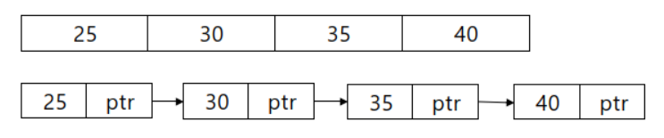

데이터와 포인터로 구성된 노드들이 연결된 자료구조.
배열과 연결리스트의 구조
데이터의 추가/삭제와 접근에 있어서 두 자료구조의 효율성이 달라진다.
배열은 index를 통하여 데이터에 바로 접근할 수 있지만 추가/삭제 할 때에는 뒤의 데이터들을 밀어내야 하는 단점이 있다.
연결리스트는 데이터에 접근하려면 차례대로 탐색해야 하지만 추가/삭제 할 때에는 포인터의 위치만 바꿔주면 되기 때문에 추가/삭제에 용이하다.
배열과 연결리스트의 시간복잡도(average case)
자료구조에 데이터를 추가/삭제할 때에는 위치에 접근한다음 연산을 실행한다. 그러면 각 자료구조의 추가/삭제 연산의 worst case 시간복잡도는 O(N)이 된다. 하지만 best case 시간복잡도를 살펴보면 연결리스트의 경우 맨 앞에 데이터를 추가하면 O(1)이 되고 배열은 마지막에 데이터를 추가할 경우 O(1)이 된다.
결론은 상황에 따라 다르지만 후에 포스팅할 이중연결리스트의 경우에는 마지막에 데이터를 추가해도 시간복잡도가 O(1)이 되기 때문에 두 자료구조를 상황에 따라 알맞게 사용해야 한다.
참고 : https://okky.kr/article/5360611 2 3 4 5 6 7 8 9 10 11 12 13 14 15 16 17 18 19 20 21 22 23 24 25 26 27 28 29 30 31 32 33 34 35 36 37 38 39 40 41 42 43 44 45 46 47 48 49 50 51 52 53 54 55 56 57 58 59 60 61 62 63 64 65 66 67 68 69 70 71 72 73 74 75 76 77 78 79 80 | #include<stdio.h> #include<stdlib.h> typedef struct node{ int data; struct node *next; }node; //리스트의 마지막에 노드를 추가하는 함수 void insertNode(node *h, int data){ node *newNode = (node*)malloc(sizeof(node)); newNode->data = data; //마지막 노드를 찾기 위한 변수 node *temp = h; while(temp->next != NULL){ temp = temp->next; } /*아래의 코드에서 순서가 바뀌면 안된다. 해당 함수에서는 마지막에 노드를 추가하기 때문에 상관없지만 처음 혹은 중간에 노드를 추가할 때는 리스트가 끊길 수 있기 때문이다.*/ newNode->next = temp->next; temp->next = newNode; } //리스트의 마지막에 노드를 삭제하는 함수 void deleteNode(node *h){ if(h->next == NULL){ printf("List is Empty!\n"); return; } /*pre : 삭제할 노드의 이전 노드 temp : 삭제할 노드 pre를 사용하는 이유는 이전노드의 next값을 바꾸고 메모리를 해제해야 리스트가 유지되기 때문이다.*/ node *pre; node *temp = h->next; while(temp->next != NULL){ pre = temp; temp = temp->next; } pre->next = NULL; free(temp); } void printList(node *h){ if(h->next == NULL){ printf("List is Empty!\n"); return; } node *temp = h->next; printf("List = [ "); while(temp != NULL){ printf("%d ", temp->data); temp = temp->next; } printf("]\n"); } int main(){ node *h = (node*)malloc(sizeof(node)); h->next = NULL; insertNode(h, 25); insertNode(h, 30); insertNode(h, 35); insertNode(h, 40); printList(h); } | cs |